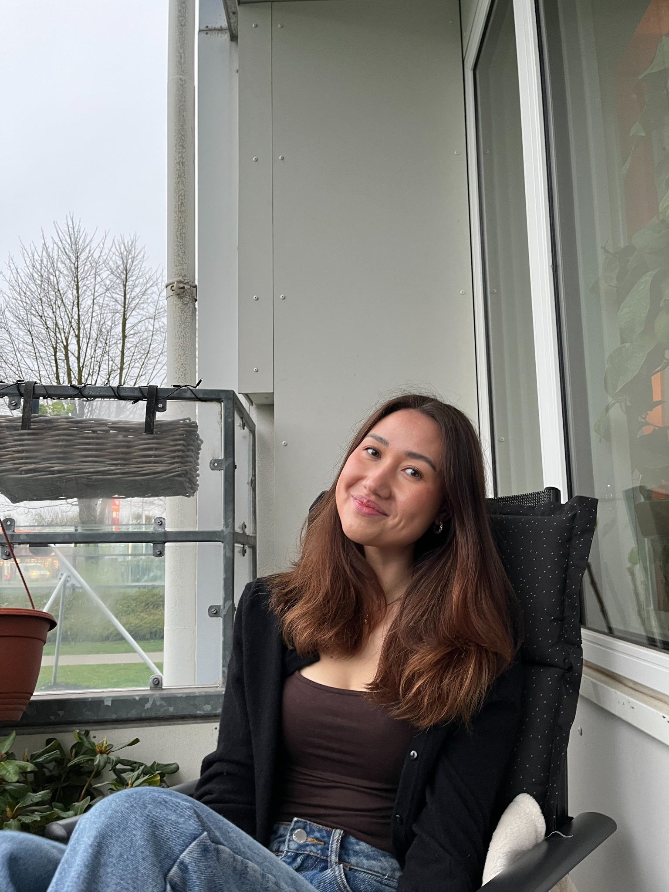
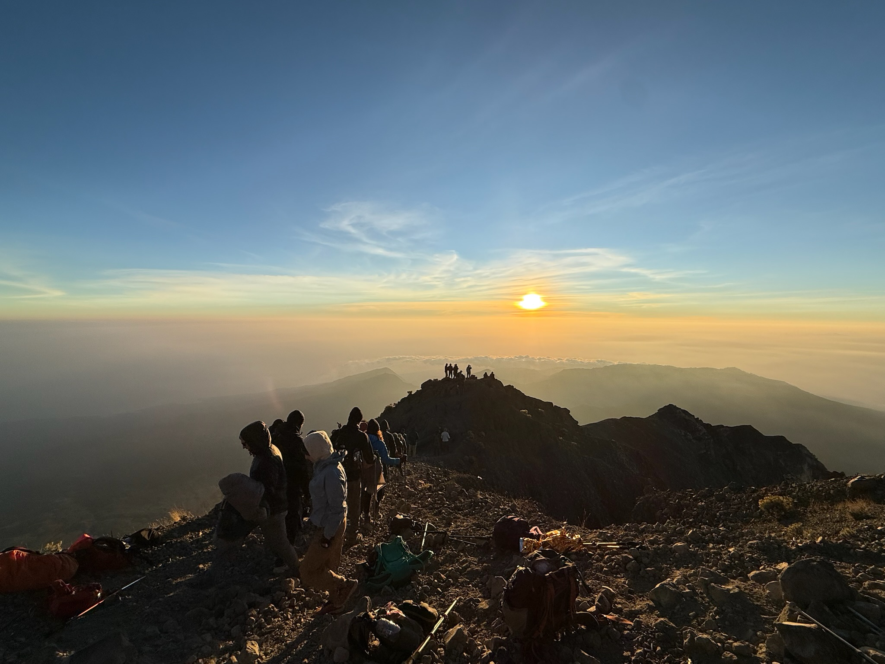
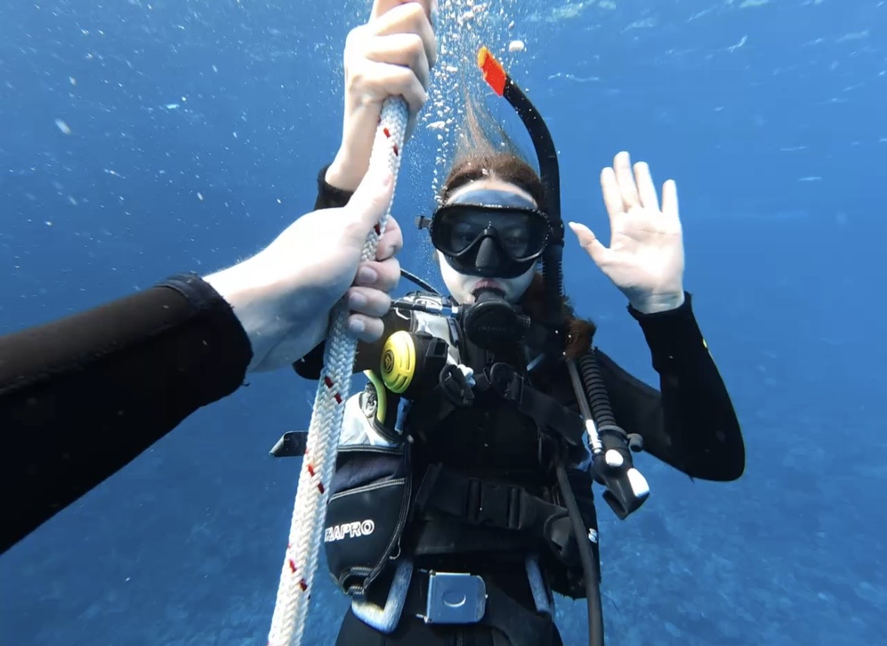

Hej, jeg er Mica.
Jeg læser til multimediedesigner i Aarhus, hvor jeg især værdsætter kombinationen af kreativitet og teknik. Jeg synes, det er spændende at udvikle idéer og visuelle koncepter og arbejde med, hvordan de kan omsættes til indhold og digitale løsninger.
Min største interesse ligger inden for visuelt design, content og digital kommunikation. Jeg brænder for at skabe indhold og visuelle løsninger, der har et stærkt og sammenhængende udtryk.
Som person er jeg detaljeorienteret og går op i de små elementer, der er med til at få det samlede udtryk til at fungere. Samtidig er jeg nysgerrig af natur og lærer bedst gennem praktisk erfaring, hvor jeg selv får mulighed for at afprøve og udforske nye idéer og teknologier.
Jeg trives både med selvstændigt arbejde og i samarbejde med andre. Jeg kan godt lide at fordybe mig i mine opgaver, men værdsætter også sparring og feedback, fordi nye perspektiver ofte er med til at skabe de bedste løsninger.
Det jeg godt
kan lide ved design
Det, jeg især godt kan lide ved design, er processen fra den første idé til et færdigt visuelt udtryk. Jeg kan godt lide at samle inspiration, udforske forskellige retninger og se en idé tage form undervejs.
Især den visuelle del af processen interesserer mig. Typografi, farver, billeder og content kan tilsammen skabe et helt univers og give et brand eller en løsning sin egen identitet.
Jeg kan godt lide at arbejde med de små detaljer og finpudse det visuelle, indtil det føles gennemført og hænger sammen som en helhed.
Når jeg ikke sidder
foran computeren
Jeg holder meget af at rejse og opleve nye steder. Jeg kan godt lide følelsen af at komme et sted hen, jeg ikke har været før, og udforske nye omgivelser, kulturer og oplevelser. Det kan være alt fra storbyferier til naturoplevelser – for mig handler det om at se og lære noget nyt.
Jeg kan også godt lide at være aktiv og bruger gerne tid på træning. Derudover betyder venner og familie meget for mig, og jeg nyder at tilbringe tid sammen med dem. Samtidig sætter jeg stor pris på de stille aftener, hvor jeg kan slappe af på sofaen med snacks og en god film.
Jeg tror på, at det er vigtigt at skabe en god balance mellem arbejde, læring og fritid, og jeg finder inspiration mange forskellige steder – både gennem nye oplevelser, mennesker og hverdagsøjeblikke.


Kontakt
Vil du høre mere?
Jeg er altid åben for en snak om praktik, design og kreative projekter.
Kontakt mig